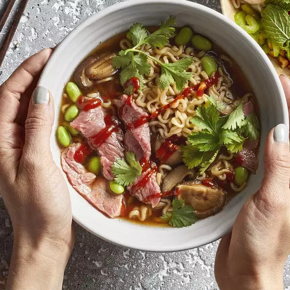

Beef Ramen Recipes

Description
A bowl of ramen with beef, most people in China loves it.
Ingredients
- 1 (3 ounce) package beef-flavored ramen noodles
- 1 cup thinly sliced shiitake mushrooms
- ½ cup frozen shelled edamame
- 1 tablespoon reduced-sodium soy sauce
- 2 teaspoons Sriracha sauce, or more to taste
- 1 (4 ounce) beef top sirloin, thinly sliced
- 1 tablespoon chopped fresh cilantro, or to taste
Directions
- Cook ramen in a saucepan according to package directions
- adding mushrooms, edamame, soy sauce, and sriracha in the last 2 minutes of cooking.
- Add steak in the last minute of cooking.
- Top servings with cilantro and, if desired, additional Sriracha sauce.